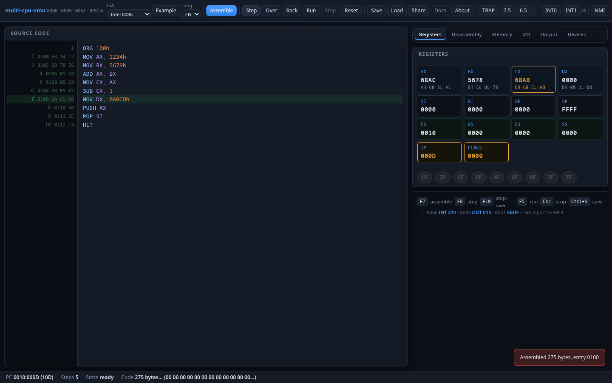
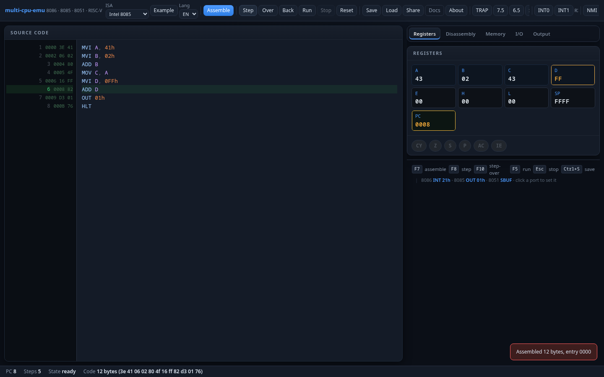
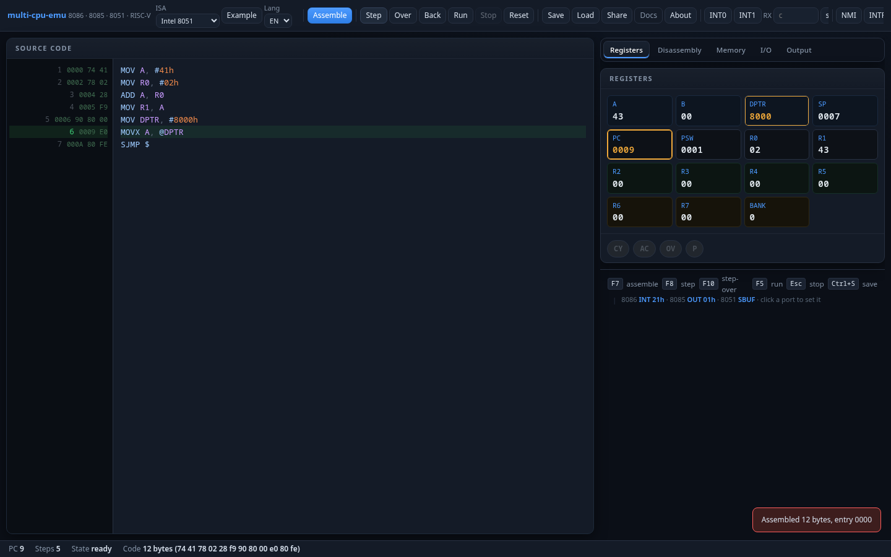
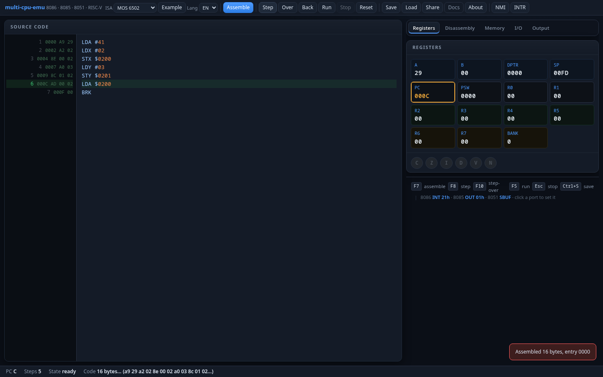
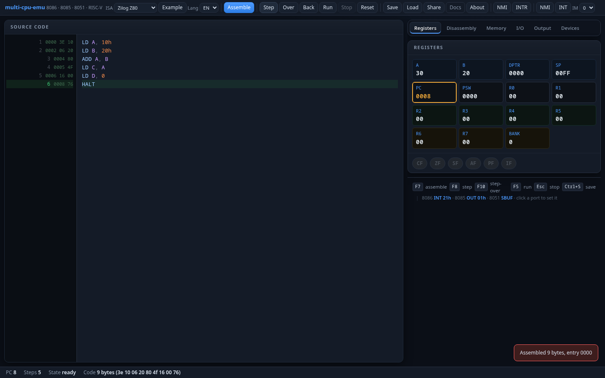
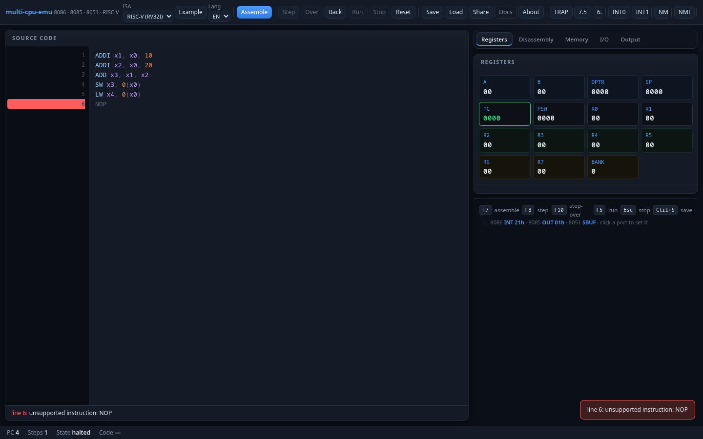

multi-cpu-emu
A browser-based IDE and emulator for six classic microprocessors. Write assembly, assemble, step, and debug — all in one page.
Quick Start
- Open the emulator in your browser.
- Select an ISA from the dropdown (default: Intel 8086).
- Write assembly in the editor, or click Example to load a sample.
- Press F7 or click Assemble to compile and load into memory.
- Press F8 or Step to execute one instruction at a time.
- Press F5 or Run to execute continuously until HLT/BRK.
- Watch registers, flags, memory, and output update in the tabs on the right.
IDE Guide

Toolbar
| Button | Key | Description |
|---|---|---|
| Assemble | F7 | Compile source and load into memory at the ISA's entry point |
| Step | F8 | Execute one instruction |
| Over | F10 | Step over a CALL — executes the entire subroutine in one step |
| Back | — | Undo last step (time-travel via snapshot restore, up to 200 steps) |
| Run | F5 | Run continuously until HLT/BRK or Stop |
| Stop | Esc | Halt continuous execution |
| Reset | F4 | Reset CPU to initial state |
| Save | — | Download a binary snapshot of the full CPU state |
| Load | — | Restore a previously saved snapshot |
| Share | — | Copy a shareable URL with code + breakpoints + watches |
Disassembly Interactions
- Click a disassembly line → toggle a breakpoint (red marker)
- Shift+click → set a conditional breakpoint (e.g.
CX==0,mem[0x200]==5,AX>10) - Double-click → run-to-cursor (executes until that instruction is reached)
Editor Autocomplete
Type in the editor to get ISA-aware autocomplete for registers, mnemonics, and labels. Navigate with ↑↓, accept with Tab or Enter, dismiss with Esc.
Languages
Switch language from the Lang dropdown: English, Spanish, German, French, Hindi.
Intel 8086
16-bit x86 processor with segmented memory. The foundation of the x86 architecture that powers most modern PCs. This emulator implements the 8086 instruction set with DOS INT 21h and BIOS INT 10h service subsets.
Registers
General (blue): AX/BX/CX/DX are 16-bit, each split into high/low 8-bit halves (AH/AL, etc). Used for arithmetic, data, pointers.
Index (gray): SI/DI for string operations, BP for stack frames, SP for the stack pointer.
Segment (teal): CS/DS/ES/SS — physical address = segment×16 + offset.
Special (amber): IP = instruction pointer, FLAGS = condition codes.
Flags
| Flag | Name | Description |
|---|---|---|
CF | Carry | Unsigned overflow / borrow |
ZF | Zero | Result is zero |
SF | Sign | Result is negative (bit 15 set) |
PF | Parity | Low byte has even parity |
AF | Auxiliary Carry | BCD carry from bit 3 to 4 |
OF | Overflow | Signed overflow |
DF | Direction | String ops direction (CLD/STD) |
IF | Interrupt Enable | Enables maskable INTR (CLI/STI) |
TF | Trap | Single-step mode (INT 1 after each instruction) |
Memory Model
1 MiB flat address space. Physical address = segment × 16 + offset. COM programs load at CS:0100h. Programs in this emulator use ORG 100h (COM format).
I/O Model
| Port | Device | Read/Write |
|---|---|---|
01h | Character output (AL → Output tab) | Write |
10h | Traffic light (bits 0/1/2 = R/Y/G) | Write |
11h/12h | 7-segment display (low/high digit) | Write |
13h | Stepper motor (4-bit coil pattern) | Write |
14h/15h | Printer (data / status) | Write/Read |
16h/17h | Robot grid (X / Y position) | Write |
20h–27h | 8×8 LED matrix (one row per port) | Write |
Text output via INT 21h: AH=01h (read with echo), AH=02h (print char in DL), AH=07h (read no echo), AH=09h (print $-terminated string at DS:DX), AH=4Ch (exit).
Graphics via INT 10h: AH=0Eh (teletype), AH=00h (set video mode, e.g. 13h for 320×200×256).
Interrupts
NMI (non-maskable, vector 02h) and INTR (maskable via IF, device-supplied vector) are available from the header bar. Set up IVT entries at 4×vector with a far pointer (offset + segment).
Instruction Set
Data Movement
Arithmetic
Logic
String
Control Flow
Flag / Control
Stack / Pseudo
Example: Hello World
ORG 100h
MOV DX, OFFSET msg
MOV AH, 09h
INT 21h
MOV AH, 4Ch
INT 21h
msg DB 'Hello, 8086!$'Intel 8085
8-bit microprocessor with accumulator-centric architecture. The predecessor to the 8086, widely used in embedded systems and education.

Registers
A: 8-bit accumulator — all arithmetic/logic results go here.
B–L: 6 general-purpose 8-bit registers, pairable as BC, DE, HL (16-bit). HL is the primary memory pointer.
SP: Stack pointer. PC: Program counter.
Flags (PSW — A + Flags in one pair)
| Flag | Name | Description |
|---|---|---|
S | Sign | Bit 7 of result set |
Z | Zero | Result is zero |
AC | Auxiliary Carry | Carry from bit 3 to 4 (BCD) |
P | Parity | Even parity of result |
CY | Carry | Unsigned overflow / borrow |
Memory Model
64 KiB flat address space. Entry at 0000h. Stack grows downward from FFFFh.
I/O Model
Character output via OUT 01h (writes A to the Output tab). All 256 ports are addressable via IN/OUT.
Instruction Set
Data Movement
Arithmetic
Logic
Control Flow
Stack / I/O
Interrupts
Hardware interrupts from the header bar:
| Button | Vector | Priority | Notes |
|---|---|---|---|
| TRAP | 0024h | 1 (highest) | Non-maskable, keeps IE |
| 7.5 | 003Ch | 2 | Edge-latched, maskable via SIM |
| 6.5 | 0034h | 3 | Maskable via SIM |
| 5.5 | 002Ch | 4 | Maskable via SIM |
| INTR | vector | 5 (lowest) | Maskable via EI/DI |
SID input pin: toggleable from the header. Read via RIM instruction (bit 7 of A).
Example: Output Loop
MVI A, '1' ; A = 31h
MVI C, 9 ; counter
LOOP: OUT 01h ; print A
INR A ; A++
DCR C ; C--
JNZ LOOP ; repeat until C=0
HLTIntel 8051 (MCS-51)
8-bit microcontroller with Special Function Registers (SFRs), bit-addressable RAM, timers, and serial port. Widely used in embedded systems.

Registers
ACC: Accumulator. B: Multiply/divide helper. R0–R7: Register bank (4 banks of 8, selected by PSW.RS0/RS1).
DPTR: 16-bit data pointer (DPH:DPL) for MOVX. SP: Stack pointer (starts at 07h).PC: Program counter.
Memory Map
Key SFRs
| Address | Name | Description |
|---|---|---|
80h | P0 | Port 0 (quasi-bidirectional) |
90h | P1 | Port 1 (quasi-bidirectional) |
A0h | P2 | Port 2 (quasi-bidirectional) |
B0h | P3 | Port 3 (alt functions: RXD, TXD, INT0, INT1, T0, T1, WR, RD) |
99h | SBUF | Serial data buffer — writing emits a char to Output |
98h | SCON | Serial control |
88h | TCON | Timer control (TF1, TR1, TF0, TR0, IE1, IT1, IE0, IT0) |
89h | TMOD | Timer mode |
8Ch/8Ah | TH0/TL0 | Timer 0 high/low byte |
8Dh/8Bh | TH1/TL1 | Timer 1 high/low byte |
Instruction Set
Data Movement
Arithmetic
Logic
Bit Operations
Control Flow
Interrupts
| Source | Vector | Priority (IP) | Notes |
|---|---|---|---|
| INT0 | 0003h | PX0 (highest) | External INT0, edge/level via IT0 |
| Timer 0 | 000Bh | PT0 | TF0 flag, cleared on service |
| INT1 | 0013h | PX1 | External INT1, edge/level via IT1 |
| Timer 1 | 001Bh | PT1 | TF1 flag |
| Serial | 0023h | PS (lowest) | RI | TI (software-cleared) |
Use the INT0/INT1 header buttons to trigger external interrupts. Type a character in the RX field and click send to inject serial data.
Example: Hello via Serial
MOV A, #'H'
MOV SBUF, A ; transmit 'H'
JNB TI, $ ; wait for TX complete
CLR TI
MOV A, #'i'
MOV SBUF, A
JNB TI, $
CLR TI
SJMP $MOS 6502
8-bit processor famous for powering the Apple II, Commodore 64, and NES. Features zero-page fast access, a hardware stack, and decimal mode.

Registers
A: 8-bit accumulator. X, Y: Index registers for addressing and counting.
SP: Stack pointer (8-bit, offset from 0100h — stack page is always 01xxh).
PC: 16-bit program counter. P: Processor status (NV-BDIZC).
Flags (P register)
| Bit | Flag | Description |
|---|---|---|
| 7 | N | Negative (bit 7 of result) |
| 6 | V | Overflow (signed) |
| 5 | — | Unused (always 1 after PHP/PLP) |
| 4 | B | Break (set on BRK) |
| 3 | D | Decimal mode (BCD arithmetic) |
| 2 | I | Interrupt disable |
| 1 | Z | Zero |
| 0 | C | Carry |
Memory Map
64 KiB flat address space. Entry at 0000h. Zero page (00–FF) enables faster addressing modes. Stack is fixed at page 1 (0100–01FF).
Addressing Modes
| Mode | Syntax | Example | Description |
|---|---|---|---|
| Immediate | #n | LDA #42 | Load constant value |
| Zero Page | addr | LDA $20 | Access zero page (1-byte address) |
| Absolute | addr | LDA $0200 | Full 16-bit address |
| Indexed X | addr,X | LDA $20,X | Address + X offset |
| Indexed Y | addr,Y | LDX $20,Y | Address + Y offset |
| Indirect,X | (addr,X) | LDA ($20,X) | Zero-page pointer + X |
| Indirect,Y | (addr),Y | LDA ($20),Y | Zero-page pointer + Y |
| Implied | — | NOP | No operand |
| Accumulator | A | ASL A | Operate on accumulator |
Instruction Set
Data Transfer
Arithmetic
Logic / Shift
Comparison
Control Flow
System
Interrupts
IRQ (maskable via I flag, vector at FFFEh) and NMI (non-maskable, vector at FFFAh) from the header bar. BRK software interrupt vectors through FFFEh with B flag set.
Example: Sum 1..10
LDA #0 ; accumulator = 0
LDX #10 ; counter
LOOP: CLC
ADC #X ; A += X (immediate not valid for ADC, use zero page)
DEX
BNE LOOP
BRK ; done: A = sum(1..10) = 55Zilog Z80
8-bit processor, superset of the Intel 8080. Adds IX/IY index registers, shadow registers (A'F'/BC'/DE'/HL'), block transfers, bit manipulation, and multiple interrupt modes.

Registers
Main set: A, F, B, C, D, E, H, L — same as 8080. AF/BC/DE/HL are 16-bit pairs.
IX/IY (purple): 16-bit index registers with displacement addressing (e.g. LD A, (IX+5)).
I: High byte of IM2 interrupt vector table. R: Auto-incrementing memory refresh counter.
SP: Stack pointer. PC: Program counter.
Flags (F register)
| Bit | Flag | Description |
|---|---|---|
| 7 | S | Sign (bit 7 of result) |
| 6 | Z | Zero |
| 5 | H | Half-carry (BCD, bit 3→4) |
| 4 | P/V | Parity / Overflow |
| 3 | N | Subtract (set by SUB, SBC; cleared by ADD, ADC) |
| 0 | C | Carry |
Instruction Set
Load
Arithmetic
Logic / Bit
Block / Search
Control Flow
I/O
Exchange / Stack
System
Interrupts
NMI (non-maskable, jumps to 0066h) and INT (maskable via IFF1). Interrupt mode selector in the header:
| Mode | Behavior |
|---|---|
| IM 0 | External device places instruction on data bus |
| IM 1 | Always RST 38h (vector 0038h) |
| IM 2 | Vector table at I×100h, device supplies low byte |
Example: Hello via OUT
LD A, 'H'
OUT (1), A ; print 'H'
LD A, 'i'
OUT (1), A ; print 'i'
HALTRISC-V RV32I
32-bit RISC processor implementing the base integer ISA (RV32I) with M extension (multiply/divide) and CSR instructions. Uses ECALL semihosting for I/O.

Registers
x0: Always zero. x1–x31: 32 general-purpose 32-bit registers (ABI names in parentheses).
PC: 32-bit program counter. All instructions are 32-bit (4-byte aligned).
Memory Model
Flat 32-bit address space (1 MiB implemented). Little-endian byte ordering. All instructions are exactly 4 bytes (no compressed).
Instruction Formats
| Format | Funct7 | Rs2 | Rs1 | Funct3 | Rd | Opcode |
|---|---|---|---|---|---|---|
| R-type | 7 bits | 5 bits | 5 bits | 3 bits | 5 bits | 7 bits |
| I-type | imm[11:0] | 5 bits | 3 bits | 5 bits | 7 bits | |
| S-type | imm[11:5] | 5 bits | 3 bits | imm[4:0] | ||
| B-type | imm[12|10:5] | 5 bits | 3 bits | imm[4:1|11] | ||
| U-type | imm[31:12] | 5 bits | 7 bits | |||
| J-type | imm[20|10:1|11|19:12] | 5 bits | 7 bits | |||
Instruction Set
Upper Immediate
Jumps
Branches
Loads / Stores
Register-Immediate
Register-Register
M Extension
System
CSR
I/O via ECALL Semihosting
| a7 | Syscall | Arguments | Description |
|---|---|---|---|
64 | write | a0=fd, a1=buf_ptr, a2=len | Write bytes to Output tab |
93 | exit | a0=code | Halt the CPU |
Example: Hello World
.text
LA a0, msg ; load address of string
LI a7, 64 ; syscall: write
LI a0, 1 ; fd = stdout
LA a1, msg ; buffer
LI a2, 3 ; length
ECALL
LI a7, 93 ; syscall: exit
ECALL
msg: .byte 'H','i','\n'Devices & I/O Peripherals
Simulated hardware accessible via I/O ports. View them in the Devices tab, or pop them out as floating windows.
| Device | Port(s) | Operation | Description |
|---|---|---|---|
| Traffic Light | 0x10 | Write | Bit 0 = Red, Bit 1 = Yellow, Bit 2 = Green |
| 7-Segment | 0x11/0x12 | Write | Low/high digit hex display (0–F per digit) |
| Stepper Motor | 0x13 | Write | 4-bit coil pattern → 8 rotor positions (45° steps) |
| Printer | 0x14/0x15 | Write/Read | Data accumulates in text buffer; status 0x80 = ready |
| Robot Grid | 0x16/0x17 | Write | 16×16 grid; X/Y position with visited trail |
| LED Matrix | 0x20–0x27 | Write | 8×8 monochrome; one port per row (bit 7 = left) |
Debugging Features
Time-Travel Debugging
Every step saves a snapshot. Click Back to undo and restore the previous CPU state (up to 200 steps of history).
Breakpoints
- Click a disassembly line → toggle an unconditional breakpoint
- Shift+click → conditional breakpoint with expression
- Double-click → run-to-cursor
Conditional Breakpoint Expressions
| Expression | Description |
|---|---|
CX==0 | Break when CX equals 0 |
AX>10 | Break when AX is greater than 10 |
mem[0x200]==5 | Break when memory at 0x200 equals 5 |
IP==0x100 | Break when IP/PC reaches a specific address |
Watch Expressions
In the Watch tab, add register names (e.g. AX) or memory expressions (e.g. [0x200]). Values that change between steps are highlighted in amber.
Snapshot Save/Load
Save downloads a binary snapshot of the entire CPU state (registers, flags, memory, breakpoints, watches). Load restores it deterministically.
Share Links
Share encodes your source code, breakpoints, and watches into a URL. Anyone with the link can open the same program.
Assembly Syntax
All assemblers share: line-oriented, case-insensitive, ; comments, labels (name: or name EQU expr).
Number Formats
| Format | Example | Meaning |
|---|---|---|
| Decimal | 42 | Base 10 |
| Hex (prefix) | 0x2A | Base 16 |
| Hex (suffix) | 2Ah | Base 16 |
| Binary | 10101b | Base 2 |
| Octal | 52q | Base 8 |
| Character | 'A' | ASCII (65) |
Directives
| Directive | Syntax | Description |
|---|---|---|
ORG | ORG 100h | Set origin address |
DB | DB 'Hello',0 | Define byte(s) |
DW | DW 1234h | Define word (16-bit LE) |
EQU | PORT EQU 0FFh | Constant symbol |
END | END | End of source (optional) |
WASM API Reference
The emulator exposes a single Emulator class via wasm-bindgen.
Constructor
const emu = new Emulator("8086"); // "8086"|"8085"|"8051"|"6502"|"Z80"|"rv32"Core
| Method | Returns | Description |
|---|---|---|
assemble(src) | Vec<u8> | Assemble source to machine code |
assemble_info(src) | Vec<String> | Per-line "ADDR BYTES" for gutter |
load(code, origin) | — | Load code at address, set PC |
step() | — | Execute one instruction |
run(max) | u32 | Run up to N steps; returns count |
run_to(pc, max) | u32 | Run until target PC is next |
pc() | u32 | Current program counter |
regs() | Vec<String> | Register dump ("NAME=val") |
flags() | Vec<String> | Active flag names |
mem(addr, len) | Vec<u8> | Read memory bytes |
out() | String | Drain program output |
halted() | bool | True if CPU halted |
reset() | — | Reset CPU |
Debug
| Method | Description |
|---|---|
snapshot() | Serialize full CPU state (deterministic) |
restore(data) | Restore from snapshot |
disasm(addr, count) | Disassemble N instructions |
set_reg(name, val) | Set a register |
set_pc(addr) | Set program counter |
I/O
| Method | ISA | Description |
|---|---|---|
port_read(port) | All | Read I/O port byte |
port_write(port, val) | All | Write I/O port byte |
push_key(ch) | 8086 | Queue type-ahead character |
waiting_input() | 8086 | True if blocked on INT 21h read |
interrupt(kind, data) | All | Raise hardware interrupt |
serial_rx(ch) | 8051 | Inject received serial byte |
set_sid(v) | 8085 | Set SID input pin |
sod() | 8085 | Read SOD output pin |
set_interrupt_mode(m) | Z80 | Set interrupt mode 0/1/2 |
Memory
| Method | Description |
|---|---|
mem_write(addr, data) | Write bytes to memory |
load_rom(data, addr) | Load ROM (read-only region) |
cycles() | Total clock cycles executed |
8051-Specific
| Method | Description |
|---|---|
sfr(addr) | Read SFR / IRAM byte |
set_sfr(addr, val) | Write SFR / IRAM byte |
set_ea(active) | Set EA (external access) pin |
8086-Specific
| Method | Description |
|---|---|
gfx() | Graphics framebuffer info (base, w, h) |
video_mode() | Current video mode byte |
screen() | Text framebuffer (80×25 char/attr) |
cursor() | Text cursor [col, row] |
fs_put(name, data) | Preload file into DOS VFS |
fs_get(name) | Read file from DOS VFS |
pit_count(n) | PIT channel 0/1/2 reload value |
Building from Source
Prerequisites
- Rust with
wasm32-unknown-unknowntarget cargo install wasm-pack
# Add WASM target (once)
rustup target add wasm32-unknown-unknown
# Build WASM package
wasm-pack build --target web --out-dir docs/pkg --release --features wasm
# Run native tests
cargo test
# Serve locally
python3 -m http.server -d docs 8000CLI Runner
cargo run --example run -- examples/hello.asm # 8086
cargo run --example run -- --isa 8085 examples/hello85.asm
cargo run --example run -- --isa 8051 examples/hello51.asm
cargo run --example run -- --isa z80 examples/helloz80.asm
cargo run --example run -- --isa 6502 examples/hello6502.asm
cargo run --example run -- --isa rv32 examples/hellorv32.asmProject Structure
multi-cpu-emu/
├── Cargo.toml
├── src/
│ ├── lib.rs # Emulator enum (6 cores)
│ ├── cpu.rs # Cpu trait, Mem, Output, FlagSet
│ ├── i8086.rs # 8086 core
│ ├── i8085.rs # 8085 core
│ ├── mcs51.rs # 8051 core
│ ├── m6502.rs # 6502 core
│ ├── z80.rs # Z80 core
│ ├── rv32.rs # RV32I core
│ ├── asm/ # Per-ISA assemblers
│ └── wasm.rs # wasm-bindgen surface
├── docs/ # Web IDE (GitHub Pages)
│ ├── index.html # Emulator
│ ├── doc.html # This page
│ ├── style.css
│ ├── app.js
│ ├── devices.js
│ ├── i18n.js
│ └── screenshots/ # Emulator screenshots
└── examples/run.rs # Native CLI runnermulti-cpu-emu v0.1.0 · MIT License · GitHub · Written in Rust → WASM